新嘗祭と紅葉狩り、は暑かった [梅吉]
我が家で収穫した稲を綺麗に掃除しようとしていたら・・・
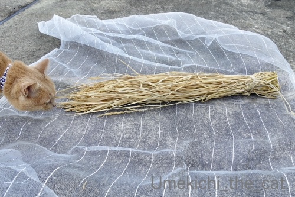
神の御使、きたーーっ！
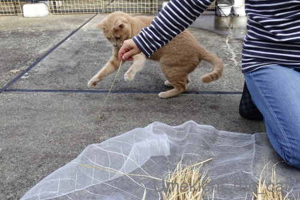
猫様が降臨されたので新嘗祭に変更です(≧▽≦)
軽く舞って
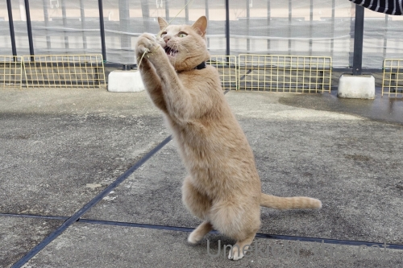
天に向かって祈る？
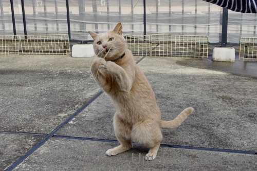
真剣に祈るとこういうお顔になるんでしょうかw
儀式の後は
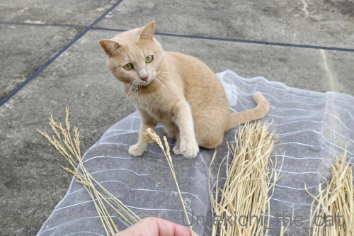
![[猫]](https://blog.ss-blog.jp/_images_e/101.gif) むむっ！
むむっ！
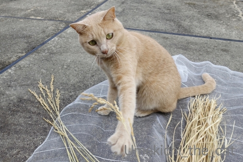
空振りねこぱーんちっ！
儀式とお手伝い、お疲れ様でしたー。
 ↑ガブッと一押し↑
↑ガブッと一押し↑
この土曜日、関東は小雨が降って寒かったようですが
関西地区は20度越え。
あちこちの紅葉も見頃との情報で京都へ紅葉狩りに行ってきました。
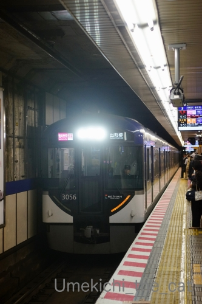
我が家が京都に行く時（大阪市内⇄京都）は京阪を利用することが多いです。
JRは大きなスーツケースを引きずったインバンウンド客でごった返しているし
京都駅の混雑っぷりは尋常じゃないので出来る限り近寄りたくないw
京阪で大きなスーツケースの人を見かけることはあまり無いような気がします。
利用しているのは関西圏の住人がほとんどなのかな？
この日は快速特急「洛楽」（らくらく）を利用。京阪は特急料金なしというのも魅力です！
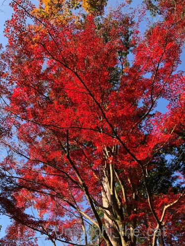
今回は山科地区散策。最初訪れたのは毘沙門堂。
ここは紅葉の名所なのですごい人です。
周辺の狭い道はマイカーと散策客でごった返しておりました。
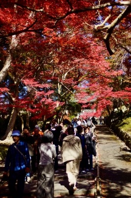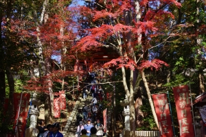
お堂に上る階段も行列ですw
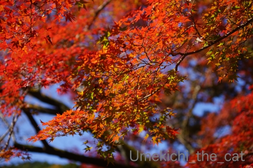
紅葉はちょうど見頃。
が、今回は毘沙門堂が目的ではないので
入り口付近の紅葉を楽しんだらささっと次に向かいます。
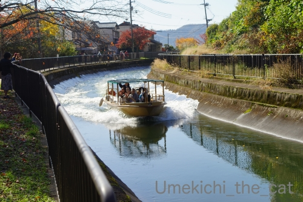
琵琶湖疏水沿いの遊歩道を歩きました。
疏水には観光用の十石船が時々行き交います。
気持ちの良いお天気でしたが日が当たると暑くて汗が・・・・・
ストールを巻いていたら暑くて暑くてwすぐに外しましたよww
半袖姿の人もちらほら(⌒-⌒;
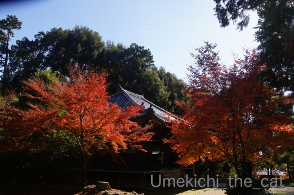
歩くこと10分くらいで安祥寺に到着。
この真言宗のお寺は創建848年ととても古いのですが通常は敷地に立ち入ることも出来ない非公開寺院。
今年は天皇陛下御即位記念ということで期間限定で特別に公開されています。
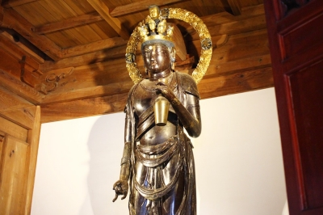
（画像はこちらからお借りしました）
こちらの御本尊「十一面観音立像」にお目にかかるのが今回の目的。
奈良時代の末期に造像されたと言う情報だけで詳細は良くわからない仏様です。
光背がよく光っていたので後年手を入れたものと思われますが
いつ修復したなどの情報もありません。
手に持っている薬壷？花瓶？？のような物も観音様らしくなく謎が多いです。
が、情報が少ない分色々と想像をたくましくして美しいお姿を楽しく堪能出来ました。
残念だったのはせっかく買った単眼鏡を忘れてしまったことー(꒦ິ⌑꒦ີ)
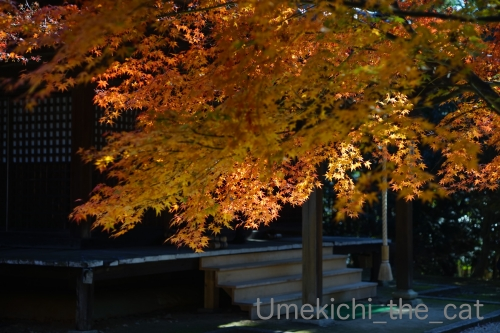
静かに仏様と向かい合い静かに境内や紅葉を楽しめる良いお寺でした。
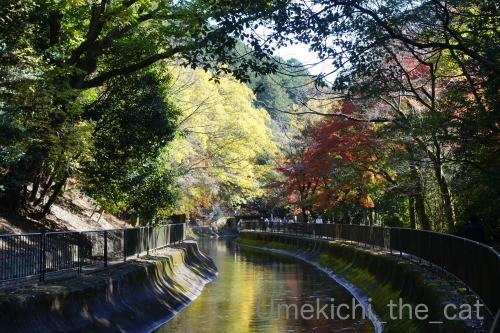
その後も疏水沿いを東山方面に向かって散策。安祥寺を過ぎると人もまばらになりのんびりです。
天智天皇陵の裏手を通って御陵（みささぎ）で地下鉄に乗り再び京阪で大阪に帰りました。
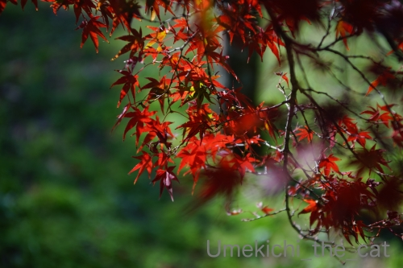
このあたり、華々しい（笑）紅葉スポットではありませんが
心静かに紅葉狩りのできるエリアでオススメです＾＾
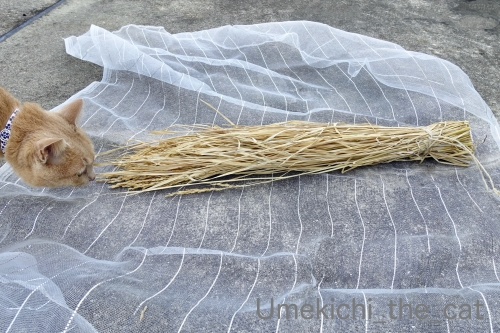
神の御使、きたーーっ！
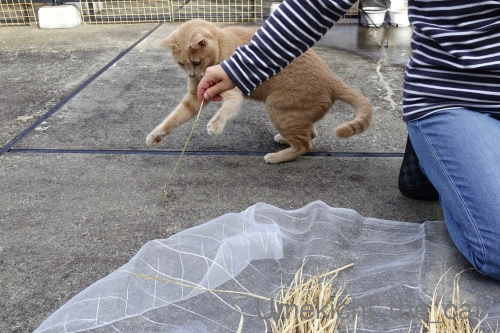
猫様が降臨されたので新嘗祭に変更です(≧▽≦)
軽く舞って
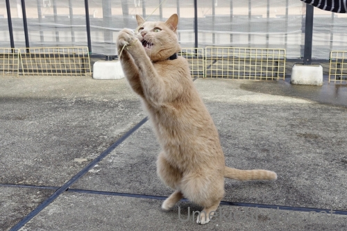
天に向かって祈る？
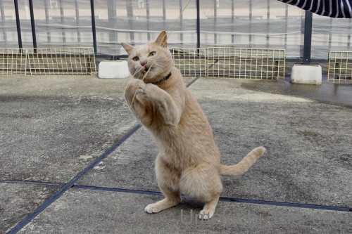
真剣に祈るとこういうお顔になるんでしょうかw
儀式の後は
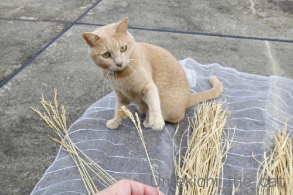
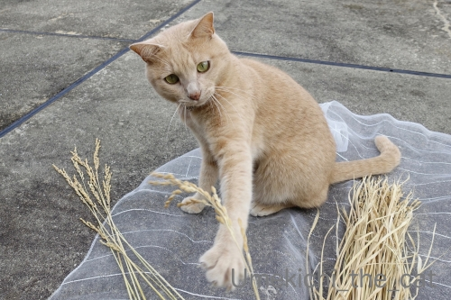
空振りねこぱーんちっ！
儀式とお手伝い、お疲れ様でしたー。
この土曜日、関東は小雨が降って寒かったようですが
関西地区は20度越え。
あちこちの紅葉も見頃との情報で京都へ紅葉狩りに行ってきました。
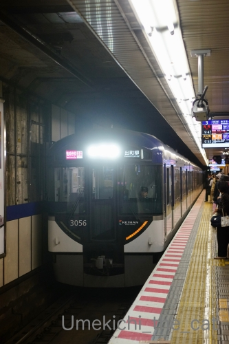
我が家が京都に行く時（大阪市内⇄京都）は京阪を利用することが多いです。
JRは大きなスーツケースを引きずったインバンウンド客でごった返しているし
京都駅の混雑っぷりは尋常じゃないので出来る限り近寄りたくないw
京阪で大きなスーツケースの人を見かけることはあまり無いような気がします。
利用しているのは関西圏の住人がほとんどなのかな？
この日は快速特急「洛楽」（らくらく）を利用。京阪は特急料金なしというのも魅力です！
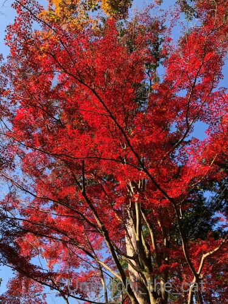
今回は山科地区散策。最初訪れたのは毘沙門堂。
ここは紅葉の名所なのですごい人です。
周辺の狭い道はマイカーと散策客でごった返しておりました。
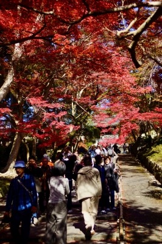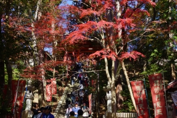
お堂に上る階段も行列ですw
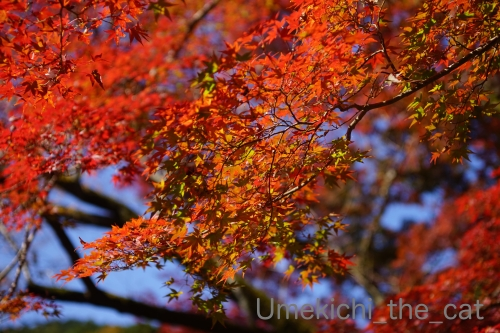
紅葉はちょうど見頃。
が、今回は毘沙門堂が目的ではないので
入り口付近の紅葉を楽しんだらささっと次に向かいます。
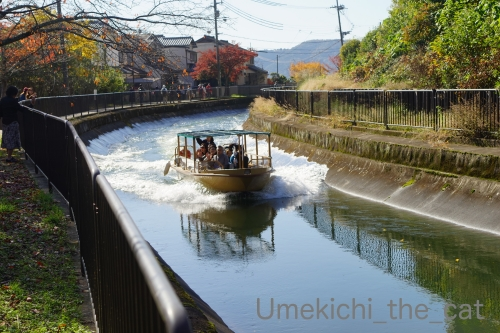
琵琶湖疏水沿いの遊歩道を歩きました。
疏水には観光用の十石船が時々行き交います。
気持ちの良いお天気でしたが日が当たると暑くて汗が・・・・・
ストールを巻いていたら暑くて暑くてwすぐに外しましたよww
半袖姿の人もちらほら(⌒-⌒;
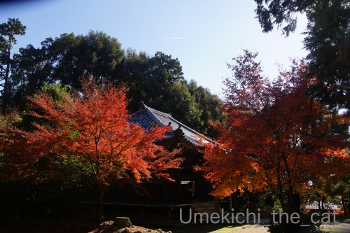
歩くこと10分くらいで安祥寺に到着。
この真言宗のお寺は創建848年ととても古いのですが通常は敷地に立ち入ることも出来ない非公開寺院。
今年は天皇陛下御即位記念ということで期間限定で特別に公開されています。
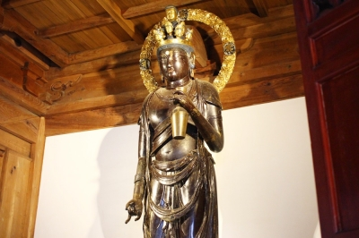
（画像はこちらからお借りしました）
こちらの御本尊「十一面観音立像」にお目にかかるのが今回の目的。
奈良時代の末期に造像されたと言う情報だけで詳細は良くわからない仏様です。
光背がよく光っていたので後年手を入れたものと思われますが
いつ修復したなどの情報もありません。
手に持っている薬壷？花瓶？？のような物も観音様らしくなく謎が多いです。
が、情報が少ない分色々と想像をたくましくして美しいお姿を楽しく堪能出来ました。
残念だったのはせっかく買った単眼鏡を忘れてしまったことー(꒦ິ⌑꒦ີ)
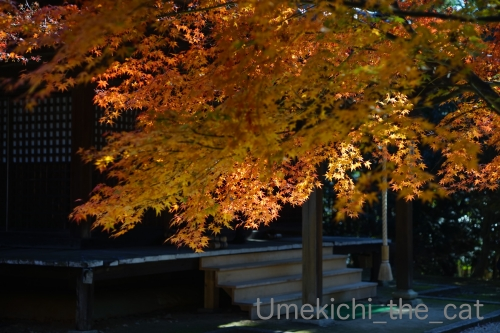
静かに仏様と向かい合い静かに境内や紅葉を楽しめる良いお寺でした。
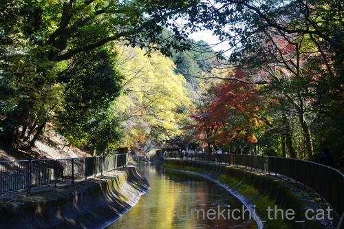
その後も疏水沿いを東山方面に向かって散策。安祥寺を過ぎると人もまばらになりのんびりです。
天智天皇陵の裏手を通って御陵（みささぎ）で地下鉄に乗り再び京阪で大阪に帰りました。
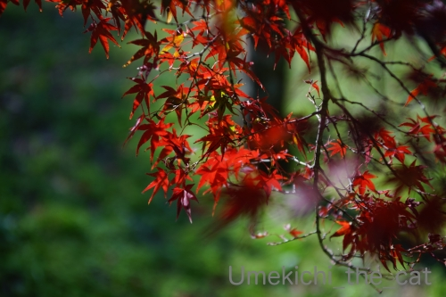
このあたり、華々しい（笑）紅葉スポットではありませんが
心静かに紅葉狩りのできるエリアでオススメです＾＾

カフェオレ色の梅吉

梅吉 2023年8月10日 永眠


梅吉と出会った譲渡会

犬猫の理由なき殺処分ゼロ
妄想広告
UMEKICHI 光

爆発的に早い！
時々攻撃的！
Thanks to Mr.Boss365
爆発的に早い！
時々攻撃的！
Thanks to Mr.Boss365

梅吉さんこれ絶対猫じゃらしだと思ってますよねー。
紅葉の名所はどこも混んでるようですね。水面に映る紅葉が綺麗です。
by zombiekong (2019-11-25 00:55)
猫舞いの奉納があったらそれはもう新嘗祭ですね！
梅吉君の躍動感あふれる写真、毎回素敵だなと拝見してます
僕は動かれるとブレブレになっちゃいます
by 藤並 香衣 (2019-11-25 01:26)
紅葉、いいなぁー。
暑かったようですが、
この季節ならではの景色を満喫されましたね(^｡^)
by よーちゃん (2019-11-25 06:11)
私も何処かに撮りに行きたいです＾＾；
by ぽちの輔 (2019-11-25 06:34)
梅吉さん、立ち上がってますね！
これはもう、もうすぐ歩きますよーー^m^
紅葉見事ですね！
しかも暖かい中、見に行けるなんていいなぁ。
こちらは山の方は見頃で、これから都心の方が始まる感じです。
by ChatBleu (2019-11-25 06:52)
梅吉さんの素敵な舞で無事新嘗祭も滞りなく終了ですね( ^ω^ )
静かにゆっくり紅葉を楽しめる場所が京都にもあるんですねぇ(°_°)
SNSで穴場はなくなったと思ってました(⌒-⌒; )
by ニッキー (2019-11-25 07:16)
稲で遊べていーね（ﾟ□ﾟ）
紅葉も綺麗だね。
by 英ちゃん (2019-11-25 07:58)
梅吉さん♪お手伝いお疲れ様です♪
ちょいと肌寒い中の紅葉狩りが普通ですが
暑かったのですね(;^_^A
ゆっくり紅葉を見れる場所！
嬉しいですね(#^.^#)
by きぃ (2019-11-25 08:08)
梅吉さん、早速遊ぶ物を見つけたみたいですね！
紅葉も綺麗に街中に降りてきましたね。
by ma2ma2 (2019-11-25 10:28)
梅吉さん、大きな猫じゃらし、おかーさんが作ってくれてよかったね～(#^^#)
見事な舞の披露ありがとうね♪
京都へ行くのは私も京阪派。叡山電車も好き。
目的地にもよりますが、JR、阪急よりゆったりしている気がします^^
京都に静かに紅葉を楽しめる場所が残っているのに驚きました。
SNSのおかげで「穴場」という言葉が死後になりつつありますもんね・・。
御堂筋のイチョウもそろそろ綺麗になっているでしょうか？
何かと忙しく近場で紅葉楽しみたいと思っております^^
by ゆきち (2019-11-25 12:45)
こんにちは。
出遅れましたが、じっくり読ませて頂きます。
稲！！梅吉君が反応しない訳がない（藁・笑）
新嘗祭、素晴らしい舞を披露！！下半身が可愛いですね。
指が開いた猫パンチもライス（ナイス）です。
都内でも一部山手線の駅では、スーツケースの観光客多く日常の風景になっています。
「毘沙門堂」赤色が鮮やかで綺麗な紅葉写真！！
琵琶湖疏水沿い良い天気みたいですね。安祥寺の「十一面観音立像」謎が多そう？
疏水沿いの散策、気持ち良さそうです。
「心静かに紅葉狩り・・」充実した週末を送られましね！？(=^･ｪ･^=)
by Boss365 (2019-11-25 13:08)
猫様。。。藁に反応しますよね。
猫心をくすぐるかほりがするのでしょうかね。
私も機能滋賀のびわ湖バレイに行っておりましたが標高が1100ｍなのに
薄手のコートで全然OKでした。そのあと紅葉狩りに行っても少し傾斜のある山道を歩いただけで汗だく。異様に暑い紅葉狩りとなりました(;^_^A
安祥寺、静かで穴場スポットですね。京都のもみじの紅は濃いですねｗ
数年前に嵐山を散策しましたがものすごい人だらけでした。人に酔います。
京阪で京都へ行く・・・うちのあたりだと阪急で京都へ行くほうが他国の方々に会わずに済むかな。JRはとにかく大きなスーツケースの方が多いですね。
by marimo (2019-11-25 16:14)
新嘗祭ですかー。いいなぁ❤
絶対じゃらしとしか思っていませんよねｗｗ
私はこの日は奈良で鹿と戯れていました。
やはりインバウンド客で混雑していましたけど＾＾
この時期の京都は行きたいけど、人込みにウンザリ
するのでなるべく避けたいです＾＾
でも私も行くなら『おけいはん』で(*￣∇￣*)
安祥寺、穴場スポットかもですねｃ⌒っ(*´∀)っφﾒﾓﾒﾓ
by カトリーヌ (2019-11-25 17:12)
神の御使、梅吉くん。
儀式、おつかれさまでございますｗｗ
十一面観音立像、すてきだな。
たしかに光背が、像よりも綺麗だね。
単眼鏡忘れちゃったの〜〜〜？？？
それは残念だよ！！＞＜
by リュカ (2019-11-25 20:14)
真っ赤な紅葉、本当に素敵ですね！
梅吉さんのお祈り、全猫を代表してるみたいですね(^^)
by kou (2019-11-25 20:56)
猫パンチ空振りも素敵です。
by 足立sunny (2019-11-25 22:02)
天に向かって祈るの図がすてき♡
待ち受けにしたいぐらいです～
by liang (2019-11-25 22:17)
かなり興味深い祈りの儀式はこれで五穀豊穣は間違いなし♪
それにしても京都の紅葉はスゴイ人・・・
でも寺院と紅葉はやっぱり絵になりますね。
疎水沿いも静かな雰囲気そうでいい～
by yamatonosuke (2019-11-26 01:15)
梅吉さん、お祈りありがとうございました^^
by ニコニコファイト (2019-11-26 07:20)
おうちで稲を収穫？すごい！
神様降臨で新嘗祭いいですね～＾＾
舞いを披露、天に向かって祈る姿、決まってます！
紅葉も素敵ですね～うちのあたりは急に寒くなったのにあんまり紅葉になってない＾＾；
安祥寺、由緒あるお寺なのですね。
十一面観音像、何を持ってらっしゃるんですかね～気になる＾＾
by sana (2019-11-26 15:27)
藁のことを猫じゃらしと思われているのでしょうか。^^;
京阪電車、いいですね。
2階建ての車両もあるし、
プレミアムカー（だったかな？）もありますし。
紅葉写真、綺麗ですね！
by yes_hama (2019-11-26 21:33)